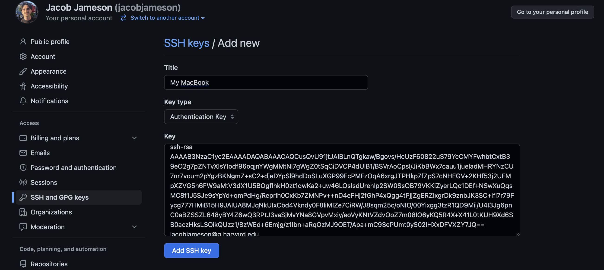

Setup Guide
Get your machine ready — budget ~30 minutes, done once
We’re fully remote on Zoom, and setup problems are slow to debug for 30 people at once. Work through every part below and run the verification checklist at the end. If something fails, post the error in the course Slack channel — we’ll debug it there before course day rather than during class.
If commands like cd and git commit are new to you, spend 15 minutes in the Terminal Trainer 🎮 — a safe, in-browser terminal that teaches every command this page uses. Then come back here and do it for real.
You’ll set up five things, in order: a terminal, git, a GitHub account (connected by SSH), the gh CLI, and an AI coding agent — Claude Code or OpenAI’s Codex, whichever you have access to. The course works identically with either.
Part 0 · A terminal
- macOS: open Terminal (Applications → Utilities → Terminal), or install iTerm2.
- Windows: install Git for Windows — make sure you include Git Bash in your installation! Git Bash is the terminal you’ll use for everything below.
- Linux: your existing terminal is fine.
Part I · Installing Git
- Install Homebrew following the instructions at https://brew.sh/.
- Open Terminal and check if git is already installed:
git --version- If not, install git with:
brew install gitThen verify it’s installed by running git --version again.
Installing Git for Windows (Part 0) also installs git. Open Git Bash and verify:
git --versionsudo apt-get update && sudo apt-get install -y git # Debian/UbuntuPart II · Creating a GitHub Account
- Go to GitHub.
- Click the “Sign Up” button.
- Follow the on-screen instructions to create your account.
Already have one? Skip ahead.
Part III · Git Setup
Configure git with your name and email address. Be sure to use the same email associated with your GitHub account:
git config --global user.name "YOUR NAME"
git config --global user.email "YOUR EMAIL ADDRESS"
git config --global init.defaultBranch mainPart IV · SSH Keys
To write code locally and push to GitHub (or pull from GitHub) without constantly entering a username and password, we set up SSH keys.
SSH keys come in pairs: a public key that gets shared with services like GitHub, and a private key that is stored only on your computer. If the keys match, you’re granted access. The cryptography behind SSH keys ensures that no one can reverse-engineer your private key from the public one.
These steps are a simplification of GitHub’s documentation — feel free to follow that instead if you prefer.
Step 1 · Check if you already have keys
ls -al ~/.ssh/If you see files like id_rsa and id_rsa.pub (or id_ed25519 / id_ed25519.pub — just a different encryption algorithm), you already have a key pair: skip to Step 3. Otherwise, read on.
Step 2 · Create new SSH keys
Run the following, replacing the email with the same email you used for GitHub:
ssh-keygen -t rsa -b 4096 -C "your_email@example.com"You’ll see a prompt like this — just hit enter to save in the default location:
Enter file in which to save the key (/Users/you/.ssh/id_rsa):Then it asks for a passphrase. We’re not using one here — leave it blank and hit enter twice:
Enter passphrase (empty for no passphrase):
Enter same passphrase again:You’ll finish with a “randomart” image — that means it worked.
Step 3 · Add your key to GitHub
Print your public key:
cat ~/.ssh/id_rsa.pubCopy the output exactly (it starts with ssh-rsa and ends with your email). Then go to https://github.com/settings/keys, hit “New SSH key”, paste it into the box, give it a title like “My MacBook Pro” (so you know which computer it came from), and hit “Add SSH key”.

Step 4 · Verify it worked!
ssh -T git@github.com(The first time, type yes when asked about the host fingerprint.) A successful connection looks like:
Hi username! You've successfully authenticated, but GitHub does not
provide shell access.You created a public/private key pair in the hidden ~/.ssh/ folder. id_rsa.pub is your public key — share it far and wide (you just gave it to GitHub). id_rsa is your private key — it never leaves your computer. The pair is mathematically linked: your computer signs with the private key, GitHub verifies with the public one, and the two can now communicate securely without a password every time.
Part V · The gh CLI and Claude Code
Two more tools and you’re done.
The GitHub CLI (gh)
gh lets you create repos and open pull requests from the terminal — we use it throughout the course.
Then log in (choose GitHub.com → SSH → your key when prompted — it’ll pick up the key you just made):
gh auth loginAn AI coding agent — pick one (or both)
The course is agent-agnostic: everything we do works the same in Claude Code (Anthropic) and Codex (OpenAI). Install whichever you have access to through your subscription, institution, or preference. Both need Node.js (LTS) first:
brew install node # macOS
# or: winget install OpenJS.NodeJS.LTS (Windows)Install, then start it once to sign in:
npm install -g @anthropic-ai/claude-code
claudeFollow the browser prompt to authenticate with your Anthropic account (Claude Pro/Max subscriptions include Claude Code; see claude.com/claude-code for current options).
Install, then start it once to sign in:
npm install -g @openai/codex
codexChoose “Sign in with ChatGPT” and follow the browser prompt (ChatGPT Plus/Pro/Team subscriptions include Codex; see developers.openai.com/codex for current options).
Whichever you already pay for or can access — they’re interchangeable for this course. Live demos will be shown in Claude Code, but every prompt and workflow transfers directly to Codex (the only visible difference: Codex reads its standing instructions from a file called AGENTS.md where Claude Code uses CLAUDE.md — we’ll cover this on course day). Other agentic CLIs (e.g., Gemini CLI) work the same way too.
Verify your setup
Run each command. You should get a version number or sensible output — not “command not found.”
git --version
ssh -T git@github.com
gh --version
gh auth status
node --version
claude --version # or: codex --version (whichever agent you installed)Then confirm the full loop — create a repo, commit, and push it to your GitHub:
mkdir agentic-warmup && cd agentic-warmup
git init
echo "# Warmup" > README.md
git add README.md
git commit -m "First commit"
gh repo create agentic-warmup --public --source=. --pushIf that last command printed your new repo’s URL, you’re fully set up. 🎉 Post a ✅ in the Slack channel. (You can delete the test repo afterward with gh repo delete agentic-warmup --yes.)
Setup complete when: git, gh, node, and your agent (claude or codex) all report versions; ssh -T git@github.com greets you by username; gh auth status shows you’re logged in; and you created + pushed a test repo.
Trouble?
| Symptom | Fix |
|---|---|
command not found: git/gh/claude |
The tool didn’t install or isn’t on your PATH. Reinstall; on Windows make sure you’re in Git Bash. |
Permission denied (publickey) |
Your SSH key isn’t on GitHub (redo Part IV Step 3), or you created it under a different name. |
gh auth login won’t open a browser |
Choose “paste an authentication token” and follow these steps. |
claude / codex says not authenticated |
Run it with no arguments and complete the browser sign-in. |
| Corporate laptop blocks installs | Post in the Slack channel — we’ll find a workaround, or use a personal machine if possible. |
Next up: ② Terminal Trainer 🎮 · ③ Git & GitHub Basics